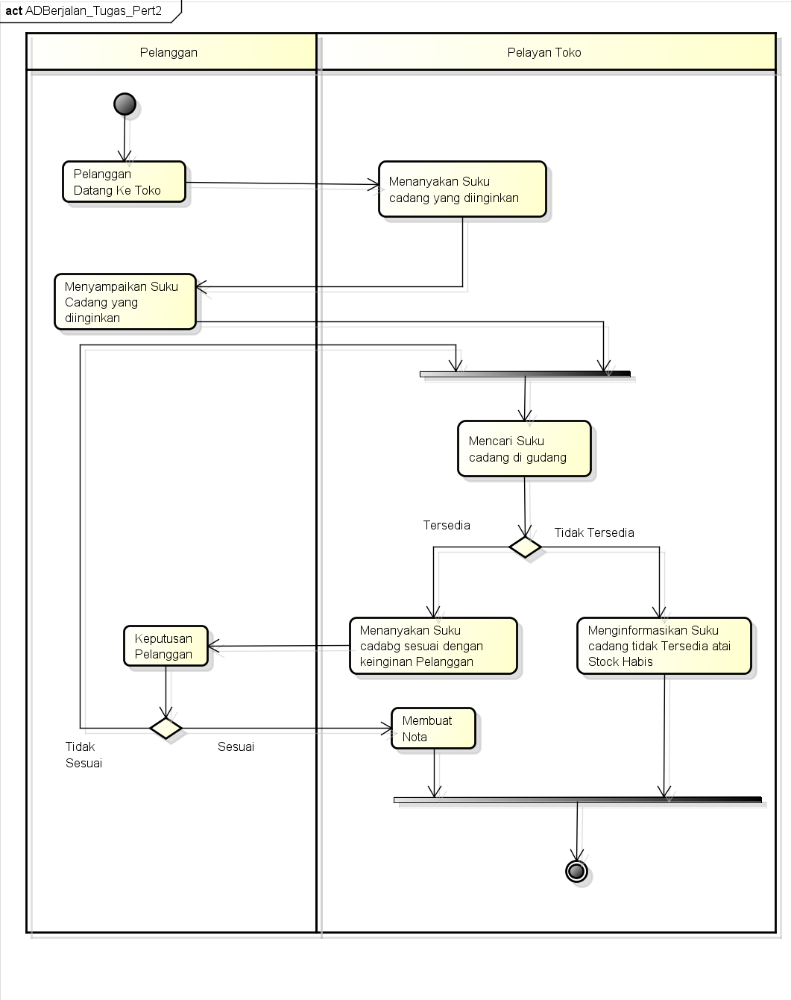

Nim: 1811500012
Nama: Michael Susento
Kelompok: TI6A
Hasil Saya Menyadur Peretemuan 2:
- Penjelasan perhitungan kehadiran Pertemuan 2 di Sadurrpl(github)
- Penjelasan perhitungan niali tugas Pertemuan 2 di Sadurrpl(github)
- Menjelaskan kasus Studi Analisa Masalah, Proses Bisnis Sistem Berjalan, Dan Activity Diagram Berjalan
- Menjelaskan fungsi Activity Diagram
- Menjelaskan Penggunaan Aplikasi Astah Community
Hasil File Project Astha Download
